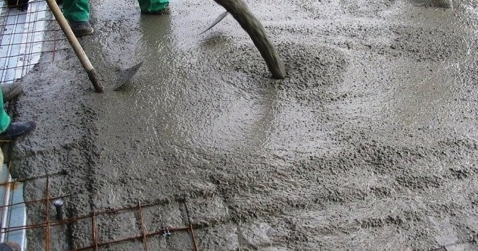
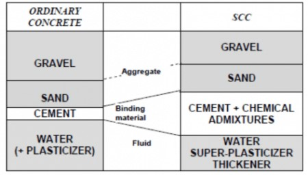

A) Introduction:
Self-consolidating concrete is a highly flowable type of concrete that spreads into the form without the need for mechanical vibration. Self-compacting concrete is a non-segregating concrete that is placed by means of its own weight. The importance of self-compacting concrete is that maintains all concrete’s durability and characteristics, meeting expected performance requirements.
Self-compacting concrete (SCC) can be defined as fresh concrete that flows under its own weight and does not require external vibration to undergo compaction. It is used in the construction where it is hard to use vibrators for consolidation of concrete. Filling and passing ability, segregation resistance are the properties of self-compacting concrete.
In certain instances, the addition of superplasticizers and viscosity modifier are added to the mix, reducing bleeding and segregation. Concrete that segregates loses strength and results in honeycombed areas next to the formwork. A well-designed SCC mix does not segregate, has high deformability and excellent stability characteristics.

B) Self-Compacting Concrete Properties:
Self-compacting concrete produces resistance to segregation by using mineral fillers or fines and using special admixtures. Self-consolidating concrete is required to flow and fill special forms under its own weight, it shall be flowable enough to pass through highly reinforced areas, and must be able to avoid aggregate segregation. This type of concrete must meet special project requirements in terms of placement and flow.
-
Cement:
Ordinary Portland cement either 400 MPA grade cement can be used.
-
Aggregates:
The size of the aggregates used for SCC design is limited to 20mm. If the reinforcement employed for the structure is congested, the aggregate size used can be in the range 10 to 12mm. Well graded aggregates either round or cubical shape are a best choice.
The fine aggregates used in SCC can be either natural aggregates or manufactured aggregates (M- Sand) with a uniform grade. The fine aggregates with particle size less than 0.125mm are generally employed.
-
Water:
The quality of water used is same that followed for reinforced concrete and prestressed concrete construction.
-
Mineral Admixtures:
The mineral admixtures used can vary based on the mix design and properties required. Mentioned below are the different mineral admixtures that can be used and their respective properties they provide.
-
Ground Granulated Blast Furnace Slag (GGBS):
The use of GGBS helps to improve the rheological properties of the self-compacting concrete
-
Fly ash:
The fine fly ash particles help to improve the filling of the internal concrete matrix with fewer pores. This improves the quality and durability of the SCC structures
-
Silica Fumes:
The use of silica fumes helps to increase the mechanical properties of the self-compacting concrete structure
-
Powder:
The use of stone powder in SCC is used to improve the powder content of the mix.
-
Chemical Admixtures:
New generation superplasticizers are commonly used in SCC mix design. In order to improve the freeze and thaw resistance of the concrete structure, air entraining agents are used. To control the setting time, retarders are employed

C) Tests and Properties of Self Compacting Concrete:
The requirements of the self-compacting concrete are achieved by the properties in its fresh state. The three main properties of SCC are:
-
Filling Ability:
This property of the concrete is the ability to flow under its own weight without any vibration provided intentionally
-
Passing Ability:
This property is the ability of the concrete to maintain its homogeneity
-
Segregation resistance:
This is the resistance of the concrete not to undergo segregation when it flows during the self-compaction process
Different tests are conducted to determine the above-mentioned properties of Self compacting concrete. The tests conducted for Self-compacting concrete can be categorized into three categories:
-
Filling Ability Tests
-
Passing Ability Tests
-
Segregation Resistance Test
The tests coming under the above-mentioned categories are tabulated below.
| Filling Ability Tests |
Passing Ability Tests |
Segregation Resistance Tests |
| Slump flow test |
L-Box Test |
V- funnel test at T5 minutes |
| T50cm Slump Flow |
J- ring test |
GTM screen stability Tests |
| Orimet |
U- Box Test |
|
| V-funnel Test |
Fill – Box Test |
|
D) Applications of Self Compacting Concrete on Site:
It is used in all applications on the site like:
-
Construction of structures with complicated reinforcement;
-
SCC is employed in the construction of raft and pile foundations; and
-
Usual works of Columns, Slabs, Beams, Shear Walls, and the Core.
E) Factors Affecting Self Compacting Concrete:
Using self-compacting concrete must not be used indiscriminately. These factors can affect the behaviour and performance of self-compacting concrete:
-
Hot weather
-
Long haul distances can reduce flowability of self-compacting concrete
-
Delays on job site could affect the concrete mix design performance
-
Job site water addition to Self-Compacting Concrete may not always yield the expected increase in flowability and could cause stability problems